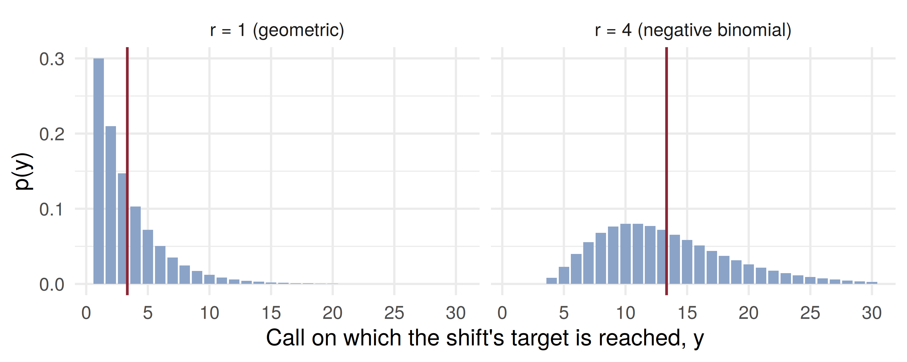

[1] 0.05731144[1] 0.4343885[1] 0.09887695[1] 0.6329193The Geometric and Negative Binomial Distributions
ADA University, School of Business
Information Communication Technologies Agency, Statistics Unit
2026-09-24
By the end of this lecture, you will be able to:
Recognise a waiting-time experiment: the successes are fixed, the number of trials is random
Compute geometric probabilities \(q^{y-1}p\) and tail probabilities \(P(Y > a) = q^a\)
Explain the memoryless property, and why “overdue” is not a probability argument
Apply the negative binomial distribution to the trial on which the \(r\)th success occurs
Use \(E(Y) = r/p\) and \(V(Y) = rq/p^2\) to plan a cost or a time budget
Wackerly §3.5–3.6
Wednesday: the binomial — fixed \(n\), two outcomes, constant \(p\), independent trials, and \(Y\) counts the successes. We ended on the question: what happens when the number of trials is the random quantity?
Today’s answer: fix the number of successes and count the trials. How many calls until the first sale? How many wells until the second discovery?
Same trials as Wednesday — two outcomes, constant \(p\), independent. Only the stopping rule changes.
\(Y\) = the number of the trial on which the first success occurs. The event \((Y = y)\) is the single sample point \(FF\cdots FS\), with \(y-1\) failures before the success, so by independence \(p(y) = q^{y-1}p\).
Definition 3.8
\(Y\) has a geometric probability distribution if and only if \[p(y) = q^{y-1}p, \qquad y = 1, 2, 3, \ldots, \quad 0 \le p \le 1.\]
Each ratio \(p(y)/p(y-1) = q < 1\): the most likely value is always \(y = 1\).
Theorem 3.8
If \(Y\) has a geometric distribution, \(\;\mu = E(Y) = \dfrac{1}{p}\;\) and \(\;\sigma^2 = V(Y) = \dfrac{1-p}{p^2}\).
Proof idea: \(\sum_y y q^{y-1} = \frac{d}{dq}\sum_y q^y = \frac{d}{dq}\frac{q}{1-q} = \frac{1}{p^2}\); multiply by \(p\).
A junior broker in Baku cold-calls prospects; each call opens an account with \(p = 0.08\). First account on call 5: \(P(Y = 5) = (0.92)^4(0.08) = 0.0573\).
\(E(Y) = 1/0.08 = 12.5\) calls and \(\sigma = \sqrt{0.92}/0.08 = 11.99\): the spread is as large as the mean.
A risk desk’s early-warning indicator flashes a crash signal on any trading day with probability \(p = 0.02\), independently. \(Y\) = the day of the first signal.
“No signal in \(a\) days” means \(a\) failures in a row, so \(P(Y > a) = q^a\) (Exercise 3.71a): \(P(Y > 20) = (0.98)^{20} = 0.6676\).
Now suppose 30 quiet days have already passed: \[P(Y > 50 \mid Y > 30) = \frac{q^{50}}{q^{30}} = q^{20} = 0.6676\]
The past 30 days changed nothing (Exercise 3.71b). A geometric process is never “overdue”: each day starts the wait afresh, which is exactly what independent trials promise.
\(Y\) = the number of the trial on which the \(r\)th success occurs. Let \(A\) = {first \(y-1\) trials hold \(r-1\) successes} and \(B\) = {trial \(y\) is a success}. They are independent, and \(P(A)\) is Wednesday’s binomial: \[p(y) = P(A)P(B) = \binom{y-1}{r-1}p^{r-1}q^{y-r} \times p\]
Definition 3.9
\[p(y) = \binom{y-1}{r-1}p^{r}q^{y-r}, \qquad y = r, r+1, r+2, \ldots, \quad 0 \le p \le 1.\]
With \(r = 1\) it is the geometric distribution.
A company holding Caspian exploration licences needs two commercial discoveries before a pipeline tie-in pays. Each appraisal well is commercial with probability \(p = 0.25\), independently.
Second discovery on the sixth well (\(r = 2\), \(y = 6\)): \[P(Y = 6) = \binom{5}{1}(0.25)^2(0.75)^4 = 5 \times 0.0625 \times 0.3164 = 0.0989\]
The budget covers eight wells. \(P(Y \le 8)\) is the chance of at least two successes in 8 binomial trials: \[1 - (0.75)^8 - 8(0.25)(0.75)^7 = 1 - 0.1001 - 0.2670 = 0.6329\]
[1] 0.05731144[1] 0.4343885[1] 0.09887695[1] 0.6329193Wackerly’s \(Y\) counts trials; R’s counts failures, \(Y^\star = Y - r\). Forget the shift and every answer is one trial off.
Theorem 3.9
\[\mu = E(Y) = \frac{r}{p} \qquad\text{and}\qquad \sigma^2 = V(Y) = \frac{r(1-p)}{p^2}.\]
A collections agent phones overdue borrowers; each call secures a payment with \(p = 0.3\). The shift ends at the fourth paying debtor: \(E(Y) = 4/0.3 = 13.33\) calls, \(V(Y) = 4(0.7)/0.09 = 31.11\).
Each call takes 4 minutes, and each payment adds 6 minutes of paperwork, so \(T = 4Y + 24\): \[E(T) = 4(13.33) + 24 = 77.3 \text{ min}, \qquad \sigma_T = 4\sqrt{31.11} = 22.3 \text{ min}\]

The geometric always peaks at \(y = 1\). Ask for four successes and the peak moves right and the distribution spreads out; the red lines mark \(r/p = 3.33\) and \(13.33\).
An importer files customs declarations one after another at a Baku border post. Each is picked for physical inspection with probability \(0.1\), independently.
Four minutes, in pairs:
What is the probability the first inspection falls on the third declaration?
What is the probability of no inspection in the first ten?
On average, on which declaration does the third inspection fall? What is \(P(\text{third inspection on declaration } 10)\)?
Geometric, \(p = 0.1\): \(P(Y = 3) = (0.9)^2(0.1) = 0.081\)
Tail: \(P(Y > 10) = (0.9)^{10} = 0.3487\)
The habit: first ask what is fixed. Fixed trials, count successes: binomial. Fixed successes, count trials: geometric or negative binomial.
A compressor station trips on any given day with probability \(0.04\), independently. On average, on which day does the first trip occur?
The crash indicator (\(p = 0.02\) per day) has been quiet for 40 days. What is the probability it stays quiet for the next 10?
| Statement | |
|---|---|
| Definition 3.8 (geometric) | \(p(y) = q^{y-1}p, \quad y = 1, 2, \ldots\) |
| tail, memoryless | \(P(Y > a) = q^a, \quad P(Y > a+b \mid Y > a) = q^b\) |
| Theorem 3.8 | \(E(Y) = 1/p, \quad V(Y) = (1-p)/p^2\) |
| Definition 3.9 (negative binomial) | \(p(y) = \binom{y-1}{r-1}p^r q^{y-r}, \quad y = r, r+1, \ldots\) |
| Theorem 3.9 | \(E(Y) = r/p, \quad V(Y) = r(1-p)/p^2\) |
| in R | dgeom(y-1, p), dnbinom(y-r, r, p) |
Binomial fixes the trials; geometric and negative binomial fix the successes and count the trials
The geometric \(p(y) = q^{y-1}p\) always peaks at \(y = 1\), with mean \(1/p\)
“No success in \(a\) trials” is \(q^a\) — a tail probability with no sum
Memoryless: a wait that has already run gives no discount on the rest of it
The negative binomial is a binomial on the first \(y - 1\) trials, times one final success
\(r/p\) and \(rq/p^2\) turn a target into a time or cost budget
Wackerly, 7th edition
§3.5: Exercises 3.67, 3.70, 3.71, 3.73, 3.75, 3.81
§3.6: Exercises 3.90, 3.91, 3.93, 3.97
Week 6, Problem Set 2 is open now and closes Sunday 25 October at 23:59 on WeBWorK, covering §3.5–3.6.
Midterm I is on 24 October, covering Chapters 1–3 (§§3.1–3.8).
Next class: Wednesday 21 October — the hypergeometric and Poisson distributions, and the review for Midterm I (Wackerly §3.7–3.8).
Dr. Samir Orujov · 📧 sorujov@ada.edu.az · 🏢 D325 · 🕓 Wed 16:00 – 18:00 · sorujov.net/teaching
Is the time until a loan defaults plausibly memoryless, or does a loan’s age matter?
Why can the most likely value of a geometric variable be \(1\) when its mean is \(12.5\)?
If the success probability drifts during a shift, which assumption of today’s models fails first?

Mathematical Statistics I - Geometric and Negative Binomial Distributions